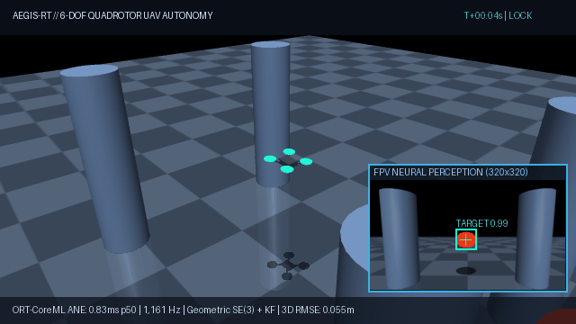
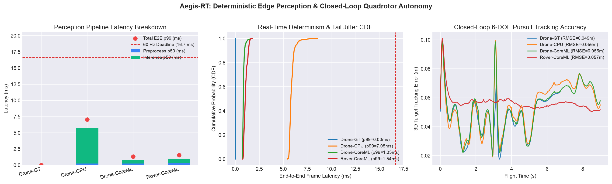

A deterministic, zero-heap-allocation edge perception and closed-loop control stack driving both a 6-DOF Quadrotor UAV and a 4-Wheel Ackermann Rover at ~1,000 Hz.

Tracks an agile 3D figure-8 target beacon weaving through cylindrical pillars using pure neural-network vision, linearized RGB-D depth back-projection, a latency-compensated 6-state Kalman filter, and X-frame 4-rotor allocation.
Click a hardware backend below to inspect why accelerating neural inference 9.6x shifts host CPU image preprocessing from 4.3% to ~30% of total frame time—motivating both our Separable 1D Bilinear LUT (CpuPreprocessPlan) + zero-alloc pre-bound ORT tensors on CPU/ANE and our custom fused CUDA kernel (src/kernels/preprocess.cu) on GPU.

Explore the exact real-time algorithms running inside src/control/: switch between the
Tangential Vortex Potential-Field Avoidance simulator and the Adaptive NIS Kalman Tracker.
Back-propagates capture state via exact delay Jacobian, gates outliers by Mahalanobis χ², and boosts Q on maneuvers.
Maps desired thrust vector onto SO(3) attitude error and preserves roll/pitch authority before collective/yaw clamping.
Computes exact inner/outer front wheel angles around the instantaneous turning center plus rear torque vectoring.
Computer Engineering · Real-Time Autonomy, Edge AI & GPU Systems
Building deterministic software where algorithms meet physical hardware—from lock-free C++20 runtimes and CUDA/TensorRT inference kernels to closed-loop robotics and embedded silicon.
Most AI demos stop at running Python scripts on recorded video. In real autonomous systems—whether aerial drones, ground rovers, or spacecraft—every millisecond of tail jitter, PCIe memory copy, and sensor-to-actuator latency directly impacts physical stability. I built Aegis-RT to bridge deep learning inference with hard-real-time Computer Engineering principles, and made the entire stack open, documented, and reproducible so anyone can experiment with it.